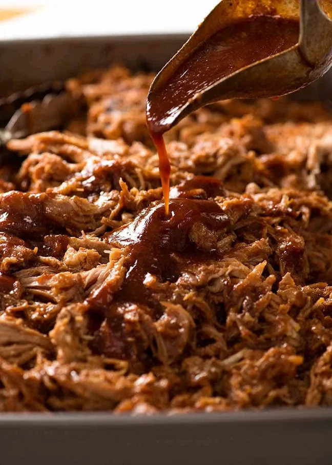

Home
BBQ Pulled Pork

Description
This is a really easy BBQ pulled pork recipe. Its been top notch every time. I liked to use the instant pot as I don't have a slow cooker. Takes roughly one and a half hours to two hours to wip it up. Slap it on some rolls with some decent sauce (im looking at you Sweet Baby Ray) plus some coleslaw and you are in business.
Ingredients
- 1.8kg to 2kg boneless pork shoulder
- 3 tbs brown sugar
- 2 tsp course salt
- 1 tsp mustard powder
- 1 tsp black pepper
- 1 tsp onion powder
- 1 tsp paprika
- ½ tsp garlic powder
- ¼ tsp cayenne pepper (skip for the kids)
- 1 ½ cups chicken stock
- 1 tbs Worcestershire sauce
- 1 tsp liquid smoke (????)
- 2 tbs olive oil
- ½ – 1 cup of your favorite BBQ sauce.
Method
- Trim excess fat from pork roast and cut into 4 same-size chunks.
- Add all dry ingredients to a large bowl and whisk together.
- Add pork roast chunks to rub mix and coat well.
- Add 2 tbs olive oil to Instant Pot and set to sauté mode. Once it indicates hot, add 2 pieces of the pork. Sear on each side for about 2 minutes each.
- Remove pork and set aside on a plate. Repeat with remaining pork pieces.
- Once pork is seared and removed from pot, press cancel and add ½ cup chicken stock. Use a wooden spoon and deglaze the bottom of the pot. Make sure to scrape up all the bits.
- Then add remaining chicken stock, Worcestershire sauce and liquid smoke.
- Place pork chunks directly into the liquid in the pot, spacing out as best possible. Secure lid and make sure vent is set to sealing position.
- Pressure cook on high pressure for 60 minutes. Then let pressure release naturally for 20 minutes or until pin drops.
- Remove pork to a large bowl and shred with 2 forks.
- Add your favorite BBQ sauce as desired. Or use the juice from the Instant Pot – it’s loaded with awesome flavor!
Note: To double the recipe, double the dry rub ingredients and increase stock to 2 cups. Cooking time will be the same. Make certain to not fill the pot past the fill line.